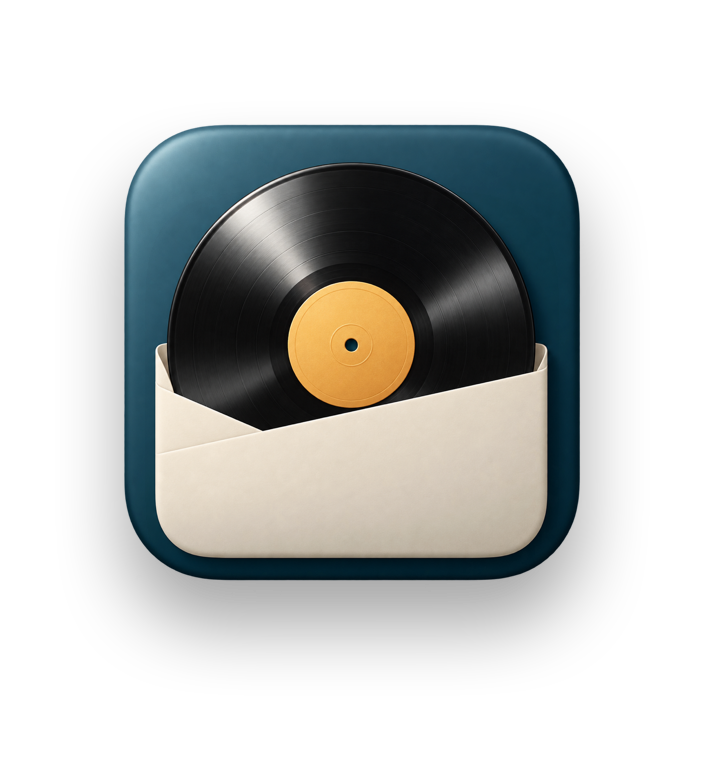

<title>Plattenregal</title>
<meta name="claude:viewport-fit-sides" content="cover">
<!--
  Die Seite zur App im Design Klassisch, wie das Handbuch (Handbuch/Handbuch.html):
  Farben aus AtelierPalette, Überschriften in New York, Bilder aus der Demo
  (Bilder/de|en/, beim Veröffentlichen aus Handbuch/Bilder/). Deutsch und
  Englisch in einer Datei, Englisch steht im Wörterbuch unten im Skript.
-->
<link rel="preconnect" href="https://fonts.googleapis.com">
<link rel="preconnect" href="https://fonts.gstatic.com" crossorigin>
<link rel="stylesheet" href="https://fonts.googleapis.com/css2?family=Source+Serif+4:ital,opsz,wght@0,8..60,400;0,8..60,600;1,8..60,400&display=swap">
<style>
  /* Layout: petrolfarbene Titel-Bande wie die Handbuch-Titelseite, darunter Papier mit Kapiteln
     (Kennzeile, Titel, Goldstrich), Bild und Text im Wechsel; am Ende die Bande der Rückseite. */
  :root {
    /* Farben des Designs Klassisch (AtelierPalette), hell */
    --paper: #F4EFE5;
    --surface: #FFFAF2;
    --soft: #EBE5DA;
    --border: #DCD7CB;
    --ink: #233A3E;
    --muted: #63716E;
    --accent: #1D4C5B;
    --gold: #E2B660;
    --gold-deep: #C99A45;
    --gold-ink: #293C39;
    --cream: #F4EFE5;
    --band-light: #2A6273;
    --band: #1D4C5B;
    --band-deep: #123C4B;
    --frame: rgba(35, 58, 62, 0.10);
    --shadow: 0 10px 30px rgba(35, 58, 62, 0.14), 0 1px 3px rgba(35, 58, 62, 0.10);

    /* Abstandsskala */
    --s-hair: 2px;
    --s-xs: 4px;
    --s-s: 8px;
    --s-m: 12px;
    --s-l: 16px;
    --s-xl: 20px;
    --s-2xl: 24px;
    --s-3xl: 32px;
    --s-4xl: 48px;
    --s-5xl: 64px;
    --s-6xl: 96px;

    /* Schriftstufen: Titel, Kapitel, Überschrift, Vorspann, Fließtext, Nebentext, Etikett */
    --t-display: clamp(46px, 9vw, 78px);
    --t-title: clamp(28px, 4.2vw, 40px);
    --t-head: 20px;
    --t-lead: clamp(18px, 2.2vw, 21px);
    --t-body: 17px;
    --t-small: 14.5px;
    --t-label: 12px;

    --serif: "New York", ui-serif, "Source Serif 4", Georgia, serif;
    --sans: -apple-system, BlinkMacSystemFont, "SF Pro Text", "Helvetica Neue", Arial, sans-serif;

    --radius-s: 5px;
    --radius-m: 10px;
    --radius-l: 14px;
    --line: 1px;
    --measure: 40em;
  }
  @media (prefers-color-scheme: dark) {
    :root:not([data-theme="light"]) {
      color-scheme: dark;
      --paper: #172B32; --surface: #213940; --soft: #1B3138; --border: #3E5155;
      --ink: #EEE8DB; --muted: #B3C1BE; --accent: #A5CCCF; --gold-deep: #E2B660;
      --band-light: #1D4C5B; --band: #123C4B; --band-deep: #0C2A34;
      --frame: rgba(0, 0, 0, 0.30);
      --shadow: 0 10px 30px rgba(0, 0, 0, 0.40), 0 1px 3px rgba(0, 0, 0, 0.30);
    }
  }
  :root[data-theme="dark"] {
    color-scheme: dark;
    --paper: #172B32; --surface: #213940; --soft: #1B3138; --border: #3E5155;
    --ink: #EEE8DB; --muted: #B3C1BE; --accent: #A5CCCF; --gold-deep: #E2B660;
    --band-light: #1D4C5B; --band: #123C4B; --band-deep: #0C2A34;
    --frame: rgba(0, 0, 0, 0.30);
    --shadow: 0 10px 30px rgba(0, 0, 0, 0.40), 0 1px 3px rgba(0, 0, 0, 0.30);
  }

  * { box-sizing: border-box; }
  body {
    margin: 0;
    background: var(--paper);
    color: var(--ink);
    font: 400 var(--t-body)/1.6 var(--sans);
    -webkit-font-smoothing: antialiased;
    font-kerning: normal;
    overflow-x: hidden;
  }
  h1, h2, h3, p, ol, ul, figure { margin: 0; }
  h1, h2, h3 { text-wrap: balance; }
  a { color: inherit; }
  :focus-visible { outline: 2px solid var(--gold); outline-offset: 3px; border-radius: var(--radius-s); }

  .wrap {
    max-width: 1080px;
    margin-inline: auto;
    padding-left: max(16px, env(safe-area-inset-left, 0px));
    padding-right: max(16px, env(safe-area-inset-right, 0px));
  }

  /* ---------- Typografie ---------- */
  .kicker {
    font-size: var(--t-label);
    font-weight: 600;
    letter-spacing: 1.8px;
    text-transform: uppercase;
    color: var(--muted);
  }
  .title {
    font-family: var(--serif);
    font-size: var(--t-title);
    font-weight: 600;
    line-height: 1.12;
    letter-spacing: -0.3px;
    margin-top: var(--s-s);
  }
  .rule {
    width: 48px;
    height: 2px;
    border-radius: 1px;
    background: var(--gold);
    margin-block: var(--s-l) var(--s-xl);
  }
  .lead {
    font-family: var(--serif);
    font-size: var(--t-lead);
    line-height: 1.5;
    max-width: var(--measure);
  }
  .text { display: grid; gap: var(--s-m); max-width: var(--measure); min-width: 0; }
  .text h3, .card h3 {
    font-family: var(--serif);
    font-size: var(--t-head);
    font-weight: 600;
    line-height: 1.3;
    color: var(--accent);
  }
  .text h3:not(:first-child) { margin-top: var(--s-m); }
  .muted { color: var(--muted); }
  .small { font-size: var(--t-small); line-height: 1.55; }
  strong { font-weight: 600; }
  .ui { font-weight: 600; color: var(--accent); }
  .nowrap { white-space: nowrap; }

  kbd {
    display: inline-block;
    font: 500 0.82em/1 var(--sans);
    padding: var(--s-hair) var(--s-xs);
    border: var(--line) solid var(--border);
    border-bottom-width: 2px;
    border-radius: var(--radius-s);
    background: var(--surface);
    color: var(--ink);
    white-space: nowrap;
  }

  /* ---------- Titel-Bande ---------- */
  .hero {
    position: relative;
    overflow: hidden;
    background: radial-gradient(120% 80% at 50% 12%, var(--band-light) 0%, var(--band) 45%, var(--band-deep) 100%);
    color: var(--cream);
    text-align: center;
  }
  .hero .wrap { padding-block: var(--s-2xl) clamp(190px, 30vw, 270px); position: relative; z-index: 2; }
  .topbar { display: flex; justify-content: flex-end; }
  .lang {
    display: inline-flex;
    gap: var(--s-hair);
    padding: 3px;
    border-radius: 999px;
    background: rgba(0, 0, 0, 0.18);
    box-shadow: inset 0 0 0 var(--line) rgba(244, 239, 229, 0.16);
  }
  .lang button {
    font: 600 var(--t-label)/1 var(--sans);
    letter-spacing: 1px;
    border: 0;
    border-radius: 999px;
    padding: var(--s-s) var(--s-m);
    background: transparent;
    color: rgba(244, 239, 229, 0.78);
    cursor: pointer;
    transition: background 0.2s ease, color 0.2s ease;
  }
  .lang button:hover { color: var(--cream); }
  .lang button[aria-pressed="true"] { background: var(--cream); color: var(--gold-ink); }
  .hero .kicker { color: var(--gold); letter-spacing: 3px; margin-top: var(--s-xl); }
  /* icon.png trägt seinen Schatten selbst (Scripts/web-icon.swift): 512 px Symbol auf
     704 × 768 px, 96 px Rand links, rechts und oben, 160 px unten. Die Ränder werden
     hier herausgerechnet, damit das Symbol selbst --icon breit ist und wie bisher sitzt. */
  .hero .icon {
    --icon: clamp(112px, 18vw, 156px);
    display: block;
    width: calc(var(--icon) * 704 / 512);
    max-width: none;
    height: auto;
    margin: calc(var(--s-3xl) - var(--icon) * 96 / 512) auto calc(var(--icon) * -160 / 512);
  }
  .hero h1 {
    font-family: var(--serif);
    font-size: var(--t-display);
    font-weight: 600;
    line-height: 1.04;
    letter-spacing: -0.5px;
    margin-top: var(--s-2xl);
  }
  .hero .rule { margin: var(--s-xl) auto; }
  .claim {
    font-family: var(--serif);
    font-style: italic;
    font-size: var(--t-lead);
    line-height: 1.45;
    color: rgba(244, 239, 229, 0.85);
  }
  .meta {
    margin-top: var(--s-2xl);
    font-size: var(--t-label);
    letter-spacing: 1.6px;
    text-transform: uppercase;
    color: rgba(244, 239, 229, 0.66);
  }
  .jump {
    display: flex;
    flex-wrap: wrap;
    justify-content: center;
    gap: var(--s-xs) var(--s-xl);
    margin-top: var(--s-xl);
    padding: 0;
    list-style: none;
    font-size: var(--t-small);
  }
  .jump a {
    color: var(--cream);
    text-decoration: none;
    border-bottom: var(--line) solid rgba(226, 182, 96, 0.55);
    padding-bottom: 1px;
  }
  .jump a:hover { border-bottom-color: var(--gold); color: var(--gold); }
  .record {
    position: absolute;
    left: 50%;
    bottom: 0;
    width: min(500px, 92vw);
    max-width: 100%;
    aspect-ratio: 1;
    transform: translate(-50%, 54%);
    z-index: 1;
    filter: drop-shadow(0 -8px 24px rgba(0, 0, 0, 0.35));
  }

  /* ---------- Kapitel ---------- */
  .chapter { padding-block: var(--s-6xl) 0; }
  .chapter + .chapter { padding-top: var(--s-5xl); }
  .chapter-head { margin-bottom: var(--s-3xl); }
  .chapter-head .rule { margin-bottom: 0; }
  .stack { display: grid; gap: var(--s-3xl); }

  figure { display: grid; gap: var(--s-s); min-width: 0; }
  figure img {
    display: block;
    width: 100%;
    height: auto;
    max-width: 100%;
    border-radius: var(--radius-m);
    box-shadow: var(--shadow);
    outline: var(--line) solid var(--frame);
    background: var(--surface);
  }
  figcaption { font-size: var(--t-small); color: var(--muted); max-width: var(--measure); }

  .split { display: grid; grid-template-columns: minmax(0, 1fr) minmax(0, 1fr); gap: var(--s-4xl); align-items: start; }
  .split.wide-left { grid-template-columns: minmax(0, 6fr) minmax(0, 5fr); }
  .rubrics { display: grid; grid-template-columns: repeat(4, minmax(0, 1fr)); gap: var(--s-2xl); }
  .rubric { display: grid; gap: var(--s-xs); align-content: start; }
  .rubric .name { font-family: var(--serif); font-size: var(--t-head); font-weight: 600; color: var(--accent); }
  .grid-2 { display: grid; grid-template-columns: repeat(2, minmax(0, 1fr)); gap: var(--s-xl); }

  .card {
    display: grid;
    gap: var(--s-s);
    align-content: start;
    background: var(--surface);
    border: var(--line) solid var(--border);
    border-radius: var(--radius-l);
    padding: var(--s-xl) var(--s-2xl);
    min-width: 0;
  }
  .card h3 { color: var(--ink); }
  .card.accent { border-left: 3px solid var(--gold); }
  .card.petrol { background: var(--band); border-color: var(--band); color: var(--cream); }
  .card.petrol h3 { color: var(--gold); }
  .tag {
    font-size: var(--t-label);
    font-weight: 600;
    letter-spacing: 1.4px;
    text-transform: uppercase;
    color: var(--gold-deep);
  }

  .bullets, .steps { list-style: none; padding: 0; display: grid; gap: var(--s-s); }
  .bullets li { position: relative; padding-left: var(--s-xl); }
  .bullets li::before {
    content: "";
    position: absolute;
    left: var(--s-hair);
    top: 0.62em;
    width: 6px;
    height: 6px;
    border-radius: 50%;
    background: var(--gold);
  }
  .steps { counter-reset: step; gap: var(--s-l); }
  .steps li { counter-increment: step; position: relative; padding-left: 44px; min-height: 28px; }
  .steps li::before {
    content: counter(step);
    position: absolute;
    left: 0;
    top: 0;
    width: 28px;
    height: 28px;
    border-radius: 50%;
    background: var(--band);
    color: var(--cream);
    font: 600 15px/28px var(--serif);
    text-align: center;
  }
  .steps.gold li::before { background: var(--gold); color: var(--gold-ink); }

  .table-scroll { overflow-x: auto; min-width: 0; }
  table.list { width: 100%; border-collapse: collapse; font-size: var(--t-small); }
  table.list th {
    text-align: left;
    font-size: var(--t-label);
    font-weight: 600;
    letter-spacing: 1.3px;
    text-transform: uppercase;
    color: var(--cream);
    background: var(--band);
    padding: var(--s-s) var(--s-m);
  }
  table.list th:first-child { border-top-left-radius: var(--radius-s); }
  table.list th:last-child { border-top-right-radius: var(--radius-s); }
  table.list td { padding: var(--s-s) var(--s-m); border-bottom: var(--line) solid var(--border); vertical-align: top; }
  table.list td:first-child { white-space: nowrap; width: 1%; padding-right: var(--s-xl); }

  /* ---------- Loslegen ---------- */
  .start {
    margin-top: var(--s-6xl);
    background: var(--soft);
    border-block: var(--line) solid var(--border);
  }
  .start .chapter { padding-block: var(--s-5xl); }

  /* ---------- Bande der Rückseite ---------- */
  .back {
    background: var(--band);
    color: var(--cream);
  }
  .back .wrap { padding-block: var(--s-5xl); display: grid; grid-template-columns: minmax(0, 1fr) auto; gap: var(--s-3xl); align-items: start; }
  .back .farewell { font-family: var(--serif); font-size: var(--t-title); font-weight: 600; line-height: 1.15; }
  .back .rule { margin-block: var(--s-l); }
  .back p { color: rgba(244, 239, 229, 0.76); max-width: var(--measure); }
  .back p + p { margin-top: var(--s-m); }
  .back img { width: 88px; height: 88px; }
  .back .discogs { font-size: var(--t-label); letter-spacing: 0.2px; color: rgba(244, 239, 229, 0.6); }

  @media (max-width: 860px) {
    .split, .split.wide-left { grid-template-columns: minmax(0, 1fr); gap: var(--s-2xl); }
    .rubrics { grid-template-columns: repeat(2, minmax(0, 1fr)); }
    .chapter { padding-top: var(--s-5xl); }
    .chapter + .chapter { padding-top: var(--s-4xl); }
    .start { margin-top: var(--s-5xl); }
  }
  @media (max-width: 560px) {
    body { font-size: 16px; }
    .grid-2 { grid-template-columns: minmax(0, 1fr); }
    .card { padding: var(--s-l) var(--s-xl); }
    .back .wrap { grid-template-columns: minmax(0, 1fr); }
    .back img { width: 64px; height: 64px; order: -1; }
  }
  @media (max-width: 400px) {
    .rubrics { grid-template-columns: minmax(0, 1fr); }
  }
</style>

<header class="hero">
  <div class="wrap">
    <div class="topbar">
      <div class="lang" role="group" aria-label="Sprache / Language">
        <button type="button" id="lang-de" data-lang="de" aria-pressed="true">DE</button>
        <button type="button" id="lang-en" data-lang="en" aria-pressed="false">EN</button>
      </div>
    </div>
    <div class="kicker" data-t="kicker">Für den Mac · mit Discogs</div>
    
    <h1>Plattenregal</h1>
    <div class="rule"></div>
    <p class="claim" data-t="claim">Deine Discogs-Sammlung –<br>und wo jede Platte im Regal steht.</p>
    <p class="meta">Version 1.0.0 · macOS 27 · Apple Silicon</p>
    <ul class="jump">
      <li><a href="#rundgang" data-t="j1">Rundgang</a></li>
      <li><a href="#regal" data-t="j2">Regal</a></li>
      <li><a href="#einsortieren" data-t="j3">Einsortieren</a></li>
      <li><a href="#statistik" data-t="j4">Statistik</a></li>
      <li><a href="#loslegen" data-t="j5">Loslegen</a></li>
    </ul>
  </div>
  <svg class="record" id="record" viewBox="0 0 480 480" aria-hidden="true"></svg>
</header>

<main>
  <section class="wrap chapter" id="rundgang">
    <div class="chapter-head">
      <div class="kicker" data-t="k1">Ein Rundgang</div>
      <h2 class="title" data-t="h1">Vier Rubriken, ein Fenster</h2>
      <div class="rule"></div>
    </div>
    <div class="stack">
      <p class="lead" data-t="lead">Plattenregal holt deine Collection und deine Wantlist aus Discogs und merkt sich, in welchem Regal, in welchem Fach und an welcher Stelle jede Platte steht. Dazu kommen eine Statistik mit dem Wert deiner Sammlung, eine Suchliste, eine Verkaufsliste, Sicherungen und Exporte.</p>
      <figure>
        
        <figcaption data-t="capCollection">Die Collection im Design Klassisch. Oben die Rubriken, an ihrem Ende die Lupe für die Suche.</figcaption>
      </figure>
      <div class="rubrics">
        <div class="rubric"><div class="name">Collection</div><div><kbd>⌘1</kbd></div><p class="small muted" data-t="r1">Alle deine Platten als Cover-Raster oder Liste. Ein Klick aufs Cover zeigt Angaben und Tracklist.</p></div>
        <div class="rubric"><div class="name">Wantlist</div><div><kbd>⌘2</kbd></div><p class="small muted" data-t="r2">Was du noch suchst, direkt aus deiner Discogs-Wantlist.</p></div>
        <div class="rubric"><div class="name" data-t="r3n">Regal</div><div><kbd>⌘3</kbd></div><p class="small muted" data-t="r3">Deine Regale mit ihren Fächern und welche Platten wo stehen.</p></div>
        <div class="rubric"><div class="name" data-t="r4n">Statistik</div><div><kbd>⌘4</kbd></div><p class="small muted" data-t="r4">Sammlungswert, Verlauf und Verteilungen nach Künstlern, Styles und Jahren.</p></div>
      </div>
      <div class="split wide-left">
        <div class="text">
          <h3 data-t="searchH">Suchen</h3>
          <p data-t="searchP">Die Lupe am Ende der Rubriken (<kbd>⌘F</kbd>) klappt das Suchfeld auf. Es findet Platten nach Interpret, Titel, Label, Katalognummer, Genre, Style und mehr. Auf der Regalseite zeigt die Suche direkt, in welchem Fach eine Platte steht.</p>
          <h3 data-t="rightH">Mehr per Rechtsklick</h3>
          <p data-t="rightP">Ein Rechtsklick auf ein Cover bietet an, die Platte im Regal zu zeigen, einen Platz für sie zu finden oder sie auf Discogs zu öffnen.</p>
        </div>
        <figure>
          
          <figcaption data-t="capFan">Der runde Knopf unten rechts fächert aus: Raster oder Liste, Synchronisieren, Einstellungen.</figcaption>
        </figure>
      </div>
      <div class="grid-2">
        <div class="card">
          <h3 data-t="mbH">Suche in der Menüleiste</h3>
          <p class="small" data-t="mbP">Eine kleine Schallplatte in der Menüleiste oder <kbd>⌥ Leertaste</kbd> sucht direkt im Regal, auch wenn gerade eine andere App vorn ist: Treffer mit ihrem Fach, darunter das Regal im Kleinen. Nach <kbd>⌘Q</kbd> läuft Plattenregal dafür ohne Symbol im Dock weiter, ganz beenden mit <kbd>⌥⌘Q</kbd>.</p>
        </div>
        <div class="card">
          <h3 data-t="wdH">Platte des Tages</h3>
          <p class="small" data-t="wdP">Ein Widget für Schreibtisch und Mitteilungszentrale zeigt jeden Tag eine Platte aus deiner Collection mit Cover und Standort. Ein Klick darauf zeigt sie im Regal. Hinzufügen: Rechtsklick auf den Schreibtisch → <span class="ui">Widgets bearbeiten</span>.</p>
        </div>
      </div>
    </div>
  </section>

  <section class="wrap chapter" id="regal">
    <div class="chapter-head">
      <div class="kicker" data-t="k2">Das Regal</div>
      <h2 class="title" data-t="h2">Jedes Fach weiß, was drinsteht</h2>
      <div class="rule"></div>
    </div>
    <div class="stack">
      <figure>
        
        <figcaption data-t="capShelf">Die Regalseite: oben die Fächer mit Buchstabenbereich und Plattenanzahl, darunter links die Regale als Reiter, rechts Raster oder Liste, unten der Inhalt des gewählten Fachs.</figcaption>
      </figure>
      <div class="split">
        <div class="text">
          <p data-t="shelfP1">Du legst dein echtes Regal einmal an, in den Größen von IKEA KALLAX oder ganz eigen mit 1 bis 6 Spalten und Reihen. Mehrere Regale, etwa im Wohnzimmer und im Flur, sind kein Problem.</p>
          <p data-t="shelfP2">Die Fächer benennt Plattenregal selbst nach dem Buchstabenbereich, der darin steht, etwa <span class="nowrap">„A – Be“</span>. Ein Klick auf ein Cover öffnet „Exemplar bearbeiten“, dort verschiebst du die Platte mit einem Regler an eine andere Position.</p>
          <p data-t="shelfP3">Fächer für Deko oder den Plattenspieler <strong>sperrst</strong> du und gibst ihnen einen Namen. Sie werden beim Einsortieren übersprungen.</p>
        </div>
        <figure>
          
          <figcaption data-t="capSetShelf">Einstellungen → Regal: Regale anlegen, benennen, Größe wählen.</figcaption>
        </figure>
      </div>
    </div>
  </section>

  <section class="wrap chapter" id="einsortieren">
    <div class="chapter-head">
      <div class="kicker" data-t="k3">Einsortieren und Ordnung halten</div>
      <h2 class="title" data-t="h3">Jede Platte an ihren Platz</h2>
      <div class="rule"></div>
    </div>
    <div class="stack">
      <div class="split">
        <figure>
          
          <figcaption data-t="capSortin">„Einsortieren“ zeigt für jede Platte Regal, Fach, Position und die Nachbarn links und rechts.</figcaption>
        </figure>
        <div class="text">
          <h3 data-t="sortH">Einsortieren</h3>
          <p data-t="sortP">Der runde <span class="ui">+</span>-Knopf auf der Regalseite listet alle Platten, die noch keinen Platz haben, alphabetisch nach Interpret. Bei jeder steht, wo sie hingehört. Stell die Platte ins echte Regal und klick auf die Zeile, dann merkt sich Plattenregal den Platz.</p>
          <h3 data-t="addH">Platte hinzufügen</h3>
          <p data-t="addP">Willst du gezielt ein Fach füllen, fahre mit dem Zeiger darüber und klicke auf das kleine <span class="ui">+</span> oben rechts im Fach.</p>
          <h3 data-t="checkH">Sortierung prüfen</h3>
          <p data-t="checkP">Rechtsklick auf ein Fach → <strong>Sortierung prüfen</strong>. Plattenregal zeigt die wenigsten Handgriffe, die das Fach wieder in Ordnung bringen, Schritt für Schritt zum Abhaken. Immer nach Interpret, bei gleichem Interpreten wahlweise nach Titel, Jahr oder Label.</p>
        </div>
      </div>
      <div class="grid-2">
        <div class="card">
          <h3 data-t="c1h">Suchliste „Gesucht“</h3>
          <p class="small" data-t="c1p">Eine Platte ist gerade nicht zu finden? Per Rechtsklick <strong>Auf die Suchliste setzen</strong>. Im Fach trägt sie dann das Etikett „Gesucht“, bis du sie als gefunden abhakst.</p>
        </div>
        <div class="card">
          <h3 data-t="c2h">Verkaufsliste</h3>
          <p class="small" data-t="c2p">Mit <strong>Zum Verkauf vormerken</strong> sammelst du Platten, die gehen dürfen. Sie bleiben, wo sie stehen. <strong>Verkauft</strong> nimmt sie alle auf einmal aus den Fächern.</p>
        </div>
      </div>
    </div>
  </section>

  <section class="wrap chapter" id="statistik">
    <div class="chapter-head">
      <div class="kicker" data-t="k4">Statistik, Sicherung und Export</div>
      <h2 class="title" data-t="h4">Was deine Sammlung wert ist</h2>
      <div class="rule"></div>
    </div>
    <div class="stack">
      <figure>
        
        <figcaption data-t="capStats">Die Statistik: Sammlungswert laut Discogs-Marktplatz, sein Verlauf und Verteilungen deiner Sammlung.</figcaption>
      </figure>
      <div class="text"><p data-t="statsP">Die Statistik zeigt den Wert deiner Sammlung nach den Preisen auf dem Discogs-Marktplatz und wie er sich entwickelt. Dazu kommen Zahlen zu Künstlern, Styles, Labels und Jahrzehnten und ein <strong>Zufallsfund</strong>, der dir mit <kbd>⇧⌘R</kbd> eine Platte aus deiner Sammlung vorschlägt.</p></div>
      <div class="grid-2">
        <div class="card accent">
          <h3 data-t="c3h">Sicherung</h3>
          <p class="small" data-t="c3p">Die Platten selbst kommen jederzeit wieder aus Discogs. <strong>Wo sie im Regal stehen, gibt es nur auf deinem Mac.</strong> Darum sichert Plattenregal die Belegung nach jeder Änderung, auf Wunsch in einen eigenen Ordner wie iCloud Drive. Einen älteren Stand holst du mit Vorschau zurück.</p>
        </div>
        <div class="card accent">
          <h3 data-t="c4h">Export</h3>
          <p class="small" data-t="c4p">Collection, Wantlist oder Verkaufsliste als <strong>CSV-Datei</strong> für Excel und Numbers oder als <strong>druckfertige PDF-Liste</strong>, nach Regal oder alphabetisch. Auf Wunsch täglich, wöchentlich oder monatlich in einen Ordner.</p>
        </div>
      </div>
    </div>
  </section>

  <section class="wrap chapter" id="kuerzel">
    <div class="chapter-head">
      <div class="kicker" data-t="k5">Darstellung und Tastenkürzel</div>
      <h2 class="title" data-t="h5">Zwei Designs, schnell per Tastatur</h2>
      <div class="rule"></div>
    </div>
    <div class="stack">
      <div class="text"><p data-t="designP">Unter Einstellungen → Darstellung wählst du zwischen <strong>Modern</strong> mit Liquid Glass und <strong>Klassisch</strong> in Petrol, Creme und Gold, wie auf dieser Seite. Beide gibt es hell und dunkel, auf Deutsch und Englisch.</p></div>
      <div class="grid-2">
        <div class="table-scroll">
          <table class="list">
            <tr><th data-t="tEverywhere">Überall</th><th></th></tr>
            <tr><td><kbd>⌥ Leertaste</kbd></td><td data-t="ks11">Im Regal suchen, auch aus anderen Apps</td></tr>
            <tr><td><kbd>⌘1</kbd> – <kbd>⌘4</kbd></td><td data-t="ks1">Collection, Wantlist, Regal, Statistik</td></tr>
            <tr><td><kbd>⌘F</kbd></td><td data-t="ks2">Suchen</td></tr>
            <tr><td><kbd>⌘R</kbd></td><td data-t="ks3">Seite aktualisieren</td></tr>
            <tr><td><kbd>⌥⌘R</kbd></td><td data-t="ks4">Alles mit Discogs synchronisieren</td></tr>
            <tr><td><kbd>⌘,</kbd></td><td data-t="ks5">Einstellungen</td></tr>
          </table>
        </div>
        <div class="table-scroll">
          <table class="list">
            <tr><th data-t="tPages">Seiten</th><th></th></tr>
            <tr><td><kbd>⌥⌘1</kbd> / <kbd>⌥⌘2</kbd></td><td data-t="ks6">Raster / Liste</td></tr>
            <tr><td><kbd>⌘+</kbd> / <kbd>⌘−</kbd></td><td data-t="ks7">Cover größer / kleiner</td></tr>
            <tr><td><kbd>esc</kbd></td><td data-t="ks12">Suche leeren, dann schließen</td></tr>
            <tr><td><kbd>⌘←</kbd> / <kbd>⌘→</kbd></td><td data-t="ks8">Vorheriges / nächstes Regal</td></tr>
            <tr><td><kbd>⇧⌘R</kbd></td><td data-t="ks9">Zufallsfund: neue Platte ziehen</td></tr>
            <tr><td><kbd>⌘Z</kbd></td><td data-t="ks10">Herausnehmen rückgängig machen</td></tr>
          </table>
        </div>
      </div>
    </div>
  </section>

  <div class="start">
    <section class="wrap chapter" id="loslegen">
      <div class="chapter-head">
        <div class="kicker" data-t="k6">Loslegen</div>
        <h2 class="title" data-t="h6">Vom Disk-Image bis zum ersten Regal</h2>
        <div class="rule"></div>
      </div>
      <div class="stack">
        <div class="split">
          <div class="text">
            <ol class="steps">
              <li data-t="st1"><strong>Installieren.</strong> Das Disk-Image öffnen und Plattenregal in den Programme-Ordner ziehen. Das Handbuch steckt in der App (Hilfe → Handbuch), auf Deutsch und Englisch.</li>
              <li data-t="st2"><strong>Einmal erlauben.</strong> Plattenregal ist nicht bei Apple notarisiert. Beim ersten Start unter <span class="ui">Systemeinstellungen → Datenschutz &amp; Sicherheit</span> auf <span class="ui">Dennoch öffnen</span> klicken, danach startet es wie jede andere App.</li>
              <li data-t="st3"><strong>Token eintragen.</strong> Auf discogs.com unter <span class="ui">Settings → Developers</span> einen persönlichen Token erzeugen, in Plattenregal <kbd>⌘,</kbd> drücken und ihn im Reiter <span class="ui">Discogs</span> einfügen.</li>
              <li data-t="st4"><strong>Synchronisieren.</strong> <span class="ui">Alles synchronisieren</span> lädt Collection und Wantlist, die Tracklisten folgen im Hintergrund.</li>
              <li data-t="st5"><strong>Regal anlegen und einsortieren.</strong> Unter Einstellungen → Regal dein Regal anlegen, dann mit dem <span class="ui">+</span>-Knopf die Platten einsortieren.</li>
            </ol>
          </div>
          <figure>
            
            <figcaption data-t="capSetDiscogs">Einstellungen → Discogs: Feld für den Token, „Speichern &amp; testen“ und der Link zu Discogs.</figcaption>
          </figure>
        </div>
        <div class="grid-2">
          <div class="card accent">
            <h3 data-t="needH">Was du brauchst</h3>
            <ul class="bullets small">
              <li data-t="need1">Einen Mac mit Apple-Chip (M1 oder neuer). Auf Intel-Macs läuft Plattenregal nicht, denn macOS 27 gibt es nur für Macs mit Apple-Chip.</li>
              <li data-t="need2"><strong>macOS 27</strong> oder neuer.</li>
              <li data-t="need3">Ein kostenloses Discogs-Konto mit deiner Sammlung.</li>
            </ul>
          </div>
          <div class="card petrol">
            <h3 data-t="demoH">Erst einmal ausprobieren?</h3>
            <p class="small" data-t="demoP">Beim ersten Start öffnet <strong>Demo starten …</strong> eine Beispielsammlung mit rund 50 Alben. Dort darfst du alles verändern, nichts wird gespeichert. Alle Bilder auf dieser Seite stammen aus der Demo.</p>
          </div>
          <div class="card">
            <h3 data-t="tokenH">Dein Token bleibt bei dir</h3>
            <p class="small" data-t="tokenP">Er liegt nur im Schlüsselbund von macOS, auf diesem Mac. Plattenregal liest damit aus Discogs, ändert dort nichts und spricht mit niemandem sonst.</p>
          </div>
          <div class="card">
            <h3 data-t="updH">Eine neue Version</h3>
            <p class="small" data-t="updP">Einfach genauso in „Programme“ ziehen und die alte ersetzen. Sammlung, Regale und Token bleiben erhalten, denn sie liegen nicht in der App selbst.</p>
          </div>
        </div>
      </div>
    </section>
  </div>
</main>

<footer class="back">
  <div class="wrap">
    <div>
      <div class="farewell" data-t="farewell">Viel Spaß beim Stöbern und Hören.</div>
      <div class="rule"></div>
      <p class="small" data-t="by">Plattenregal 1.0.0 · von Patrice Werner · für macOS 27 auf Macs mit Apple-Chip. Plattenregal ist ein privates Projekt und wird derzeit persönlich weitergegeben.</p>
      <p class="small" data-t="privacy">Deine Daten bleiben auf deinem Mac. Plattenregal spricht nur mit Discogs und sendet nichts an Dritte.</p>
      <p class="discogs">This application uses Discogs’ API but is not affiliated with, sponsored or endorsed by Discogs. ‘Discogs’ is a trademark of Zink Media, LLC.</p>
    </div>
    
  </div>
</footer>

<script>
  // Die Schallplatte wie auf der Titelseite des Handbuchs: Rillen, ein Glanz, das goldene Etikett.
  (() => {
    const ns = "http://www.w3.org/2000/svg";
    const svg = document.getElementById("record");
    const add = (parent, name, attrs) => {
      const e = document.createElementNS(ns, name);
      for (const k in attrs) e.setAttribute(k, attrs[k]);
      parent.appendChild(e);
      return e;
    };
    const defs = add(svg, "defs", {});
    const sheen = add(defs, "linearGradient", { id: "sheen", x1: "0", y1: "0", x2: "1", y2: "1" });
    for (const [o, a] of [[0.25, 0], [0.5, 0.16], [0.75, 0]]) {
      add(sheen, "stop", { offset: o, "stop-color": "#fff", "stop-opacity": a });
    }
    add(svg, "circle", { cx: 240, cy: 240, r: 240, fill: "#16191A" });
    for (let r = 236; r > 92; r -= 3) {
      add(svg, "circle", { cx: 240, cy: 240, r, fill: "none", stroke: "#fff", "stroke-width": 0.6, "stroke-opacity": r % 27 < 3 ? 0.11 : 0.045 });
    }
    add(svg, "circle", { cx: 240, cy: 240, r: 240, fill: "url(#sheen)" });
    add(svg, "circle", { cx: 240, cy: 240, r: 84, fill: "#E2B660" });
    add(svg, "circle", { cx: 240, cy: 240, r: 64, fill: "none", stroke: "#C99A45", "stroke-width": 1 });
  })();

  // Sprache: Deutsch steht im Markup, Englisch hier. Begriffe wie im englischen Handbuch.
  (() => {
    const en = {
      kicker: "For the Mac · with Discogs",
      claim: "Your Discogs collection –<br>and where every record sits on the shelf.",
      j1: "Tour", j2: "Shelf", j3: "Placing", j4: "Statistics", j5: "Get started",
      k1: "A quick tour", h1: "Four sections, one window",
      lead: "Plattenregal brings in your collection and your wantlist from Discogs and remembers on which shelf, in which compartment and at which spot every record sits. On top of that there are statistics with the value of your collection, a search list, a sale list, backups and exports.",
      altCollection: "The collection as a grid of covers",
      capCollection: "The collection in the Classic design. At the top the sections, at their end the magnifying glass for the search.",
      r1: "All your records as a cover grid or a list. Clicking a cover shows details and the tracklist.",
      r2: "What you’re still looking for, straight from your Discogs wantlist.",
      r3n: "Shelf", r3: "Your shelves with their compartments and which record sits where.",
      r4n: "Statistics", r4: "Collection value, its history and breakdowns by artist, style and year.",
      searchH: "Searching",
      searchP: "The magnifying glass at the end of the sections (<kbd>⌘F</kbd>) opens the search field. It finds records by artist, title, label, catalog number, genre, style and more. On the shelf page the search shows right away which compartment a record is in.",
      rightH: "More with a right-click",
      rightP: "Right-clicking a cover offers to show the record on the shelf, to find a spot for it or to open it on Discogs.",
      altFan: "The round button with grid, list, sync and settings",
      capFan: "The round button at the bottom right fans out: grid or list, sync, settings.",
      mbH: "Search in the menu bar",
      mbP: "A small record in the menu bar or <kbd>⌥ Space</kbd> searches your shelves directly, even while another app is in front: matches with their compartment, below them the shelf in miniature. After <kbd>⌘Q</kbd> Plattenregal keeps running for this without a Dock icon, quit completely with <kbd>⌥⌘Q</kbd>.",
      wdH: "Record of the Day",
      wdP: "A widget for the desktop and Notification Center shows a record from your collection every day, with its cover and location. Clicking it shows the record on the shelf. To add it: right-click the desktop → <span class=\"ui\">Edit Widgets</span>.",
      k2: "The shelf", h2: "Every compartment knows what’s in it",
      altShelf: "The shelf page with twelve compartments and the contents of the selected one",
      capShelf: "The shelf page: the compartments with their letter range and number of records at the top, below them the shelves as tabs on the left and grid or list on the right, at the bottom the contents of the selected compartment.",
      shelfP1: "You set up your real shelf once, in IKEA KALLAX sizes or entirely your own with 1 to 6 columns and rows. Several shelves, say in the living room and the hallway, are no problem.",
      shelfP2: "Plattenregal names the compartments itself after the letter range they hold, for example <span class=\"nowrap\">“A – Be”</span>. Clicking a cover opens “Edit Copy”, where a slider moves the record to another position.",
      shelfP3: "Compartments for decor or the turntable can be <strong>locked</strong> and named. They are skipped when placing records.",
      altSetShelf: "Settings, Shelf tab",
      capSetShelf: "Settings → Shelf: add shelves, name them, choose their size.",
      k3: "Placing records and keeping order", h3: "Every record in its place",
      altSortin: "Not placed yet: records without a spot with shelf, compartment, position and neighbours",
      capSortin: "“Not placed yet” shows shelf, compartment, position and the neighbours on either side for every record.",
      sortH: "Placing",
      sortP: "The round <span class=\"ui\">+</span> button on the shelf page lists every record without a spot yet, alphabetically by artist. Each one shows where it belongs. Put the record on your real shelf and click its row, and Plattenregal remembers the spot.",
      addH: "Add Record",
      addP: "To fill one compartment on purpose, move the pointer over it and click the small <span class=\"ui\">+</span> at its top right.",
      checkH: "Check Order",
      checkP: "Right-click a compartment → <strong>Check Order</strong>. Plattenregal shows the fewest moves that put the compartment back in order, step by step to tick off. Always by artist, and for the same artist by title, year or label as you choose.",
      c1h: "Search list “Looking for”",
      c1p: "Can’t find a record right now? Right-click → <strong>Add to Search List</strong>. In its compartment it then carries the tag “Looking for” until you tick it off as found.",
      c2h: "Sale list",
      c2p: "With <strong>Mark for sale</strong> you collect records that may go. They stay where they are. <strong>Sold</strong> takes them all out of their compartments at once.",
      k4: "Statistics, backup and export", h4: "What your collection is worth",
      altStats: "The statistics with collection value, history and breakdowns",
      capStats: "The statistics: collection value according to the Discogs marketplace, its history and breakdowns of your collection.",
      statsP: "The statistics show what your collection is worth at Discogs marketplace prices and how that develops. On top come figures on artists, styles, labels and decades, and a <strong>Random pick</strong> that suggests a record from your collection with <kbd>⇧⌘R</kbd>.",
      c3h: "Backup",
      c3p: "The records themselves can always come back from Discogs. <strong>Where they sit on the shelf exists only on your Mac.</strong> That’s why Plattenregal backs up the layout after every change, to a folder of your own such as iCloud Drive if you like. An earlier state comes back with a preview.",
      c4h: "Export",
      c4p: "Your collection, wantlist or sale list as a <strong>CSV file</strong> for Excel and Numbers or a <strong>print-ready PDF list</strong>, in shelf or alphabetical order. Daily, weekly or monthly into a folder if you like.",
      k5: "Appearance and keyboard shortcuts", h5: "Two designs, quick from the keyboard",
      designP: "Under Settings → Appearance you choose between <strong>Modern</strong> with Liquid Glass and <strong>Classic</strong> in petrol, cream and gold, as on this page. Both come in light and dark, in German and English.",
      tEverywhere: "Everywhere", tPages: "Pages",
      ks1: "Collection, Wantlist, Shelf, Statistics", ks2: "Search", ks3: "Refresh Page",
      ks4: "Sync Everything with Discogs", ks5: "Settings", ks6: "Grid / List",
      ks7: "Larger / Smaller Covers", ks8: "Previous / Next Shelf", ks9: "Random Pick: Draw Another Record",
      ks10: "Undo Removal", ks11: "Search the shelf, also from other apps", ks12: "Clear the search, then close it",
      k6: "Get started", h6: "From the disk image to your first shelf",
      st1: "<strong>Install.</strong> Open the disk image and drag Plattenregal to the Applications folder. The user guide is inside the app (Help → User Guide), in German and English.",
      st2: "<strong>Allow it once.</strong> Plattenregal is not notarized by Apple. On first launch, click <span class=\"ui\">Open Anyway</span> under <span class=\"ui\">System Settings → Privacy &amp; Security</span>, and from then on it starts like any other app.",
      st3: "<strong>Enter your token.</strong> Create a personal token on discogs.com under <span class=\"ui\">Settings → Developers</span>, press <kbd>⌘,</kbd> in Plattenregal and paste it in the <span class=\"ui\">Discogs</span> tab.",
      st4: "<strong>Sync.</strong> <span class=\"ui\">Sync Everything</span> loads your collection and wantlist, the tracklists follow in the background.",
      st5: "<strong>Set up your shelf and place records.</strong> Add your shelf under Settings → Shelf, then place your records with the <span class=\"ui\">+</span> button.",
      altSetDiscogs: "Settings, Discogs tab with the token field",
      capSetDiscogs: "Settings → Discogs: the token field, “Save &amp; Test” and the link to Discogs.",
      needH: "What you need",
      need1: "A Mac with Apple silicon (M1 or later). Plattenregal doesn’t run on Intel Macs, as macOS 27 is only available for Macs with Apple silicon.",
      need2: "<strong>macOS 27</strong> or later.",
      need3: "A free Discogs account with your collection.",
      demoH: "Want to try it first?",
      demoP: "On first launch, <strong>Start Demo…</strong> opens a sample collection of about 50 albums. Change whatever you like there, nothing is saved. Every picture on this page comes from the demo.",
      tokenH: "Your token stays with you",
      tokenP: "It’s kept only in the macOS keychain, on this Mac. Plattenregal reads from Discogs with it, changes nothing there and talks to no one else.",
      updH: "A new version",
      updP: "Drag it to Applications the same way and replace the old one. Your collection, shelves and token stay, as they aren’t stored inside the app.",
      farewell: "Enjoy digging and listening.",
      by: "Plattenregal 1.0.0 · by Patrice Werner · for macOS 27 on Macs with Apple silicon. Plattenregal is a private project and is currently passed on in person.",
      privacy: "Your data stays on your Mac. Plattenregal only talks to Discogs and sends nothing to third parties."
    };
    const de = {};
    document.querySelectorAll("[data-t]").forEach(el => { de[el.dataset.t] = el.innerHTML; });
    document.querySelectorAll("[data-alt]").forEach(el => { de[el.dataset.alt] = el.alt; });
    const dict = { de, en };

    function apply(lang) {
      const t = dict[lang];
      document.documentElement.lang = lang;
      document.querySelectorAll("[data-t]").forEach(el => { if (t[el.dataset.t] != null) el.innerHTML = t[el.dataset.t]; });
      document.querySelectorAll("[data-alt]").forEach(el => { if (t[el.dataset.alt] != null) el.alt = t[el.dataset.alt]; });
      document.querySelectorAll("[data-img]").forEach(el => { el.src = `Bilder/${lang}/${el.dataset.img}`; });
      document.querySelectorAll(".lang button").forEach(b => b.setAttribute("aria-pressed", String(b.dataset.lang === lang)));
    }

    let saved = null;
    try { saved = localStorage.getItem("plattenregal-lang"); } catch (e) {}
    const initial = saved || ((navigator.language || "de").toLowerCase().startsWith("de") ? "de" : "en");
    document.documentElement.lang = "de";
    if (initial === "en") apply("en");

    document.querySelectorAll(".lang button").forEach(b => b.addEventListener("click", () => {
      apply(b.dataset.lang);
      try { localStorage.setItem("plattenregal-lang", b.dataset.lang); } catch (e) {}
    }));
  })();
</script>
